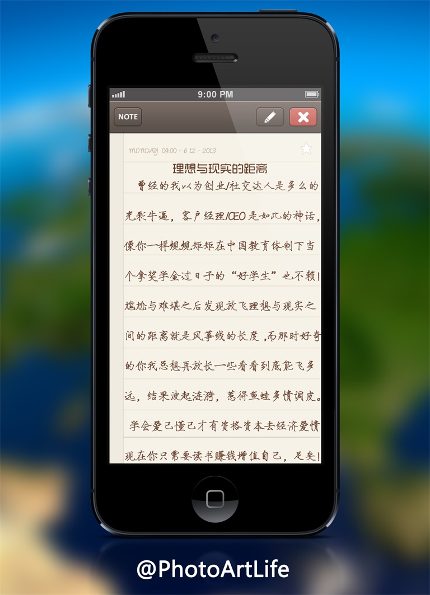

-
文章更新通知
程序猿出去度假了，最新文章均移动到另一子网站板块，后期博客也上线了，可以关注公众号PhotoArtLife查看所有文章哟~
-
诗意活着比忙里偷闲舒服许多
每个人都有属于自己的一片森林，也许我们从来不曾去过，但它一直在那里，总会在那里。迷失的人迷失了，相逢的人会再相逢。——《挪威的森林》

我不断地更换认识的人，也不断地使自己进入不认识的人们之中去。我既不悲观，也不乐观，只是每天早上睁开眼睛迎接新的一天，一个人努力过下去。——青山七惠
为什么你我曾想过要换一种生活或者环境方式，可能主要的原因是逃避现在的自己，改变自己在现实环境里面的位置；很多时候不愿意融入新的群体，不满现在的自己，不知多少次要想成为更强的自己；记得一句老话 ，真的勇士，敢于直面惨淡的人生，敢于正视淋漓的鲜血；很多优秀人物的习惯都很好，走独木桥时也打滑但不至于夭折，绞尽脑汁想创意拼勤奋创梦想也终究平平，也许这里面也包括我，一个平庸的无知小道；我感恩亲朋好友，尽孝是我一切的终点；延续那句老话，天下太美好，生命有限，而我只有做到亲友梦想和好姑娘不可辜负就好，命中注定，我相信命运，但从不会认命！
-
我还没有太羡慕你，这样就好
我不羡慕别人的收入，因为我知道他，日日夜夜的艰辛；也不羡慕别人，说走就走的自由，我知道他为这份自由，付出的代价；更不羡慕别人，不用上班有人养，却不知她在多少个，日日夜夜流泪和等待；一切都有代价，无论是财富、事业、还是自由，所以不必羡慕；生活不在别处，而在于你付出了多少，就会收获多少，加油！走在人生路上的我们，不攀比、不抱怨、不计较；多包容、多理解、多付出；因为有一种努力叫做，靠自己！
说不羡慕是否太美好，事实有多难做到，你我心照不宣，暂且无心关照；很多人受到触动便开始揣着昂扬模仿创新的思想去粘贴别人的部分生活方式，问你一句，你学会了多少呢？环境的变动和诱惑是否一次次阻碍了计划？过事之后的自责不断的循环，如果有幸我可以读到某人写的电台或者故事，想必你的缩影就是某章节的主人公；生活就是这样，生命本来就有无数冲动和可能，我们总在试着模仿周围的人和事，有时搞得一片狼藉，时而一处哗然，但惊喜总如塞翁失马，记住一点，相信生活但不要太乐观就好！
-
好习惯的时间跨度决定幸福的恒生指数
人不能老是孤独的活着，之所以有作品，是为了沟通，所以，作品就是自己；我们看似好友千万，却最唯爱孤独，我们都是世界孤独的行者；抛开爱恨情仇，文字和音乐最让我们流连忘返，我们是乐于助人和喜欢分享的一族，我们因为独立而自豪！
我喜欢坚持下面的习惯，坚持做好这些事让个人的灵魂和肉体有一个全新的开始！
1：利用你的通勤时间 Celebrate yourself 充分控制自己和自己的时间，你会在繁杂的现实生活中突然发现，世界又多了一个窗口；
2：下班不等于一直放松 Your unbroken time 睡前的两三个小时是非常重要的，因为它是难得的unbroken time(不被打扰的时间) 我一直想学一门乐器，想用音乐陶冶自己的情操；
3：学会冥想和视觉化 Meditate，Visualize 想象你想要的东西和欲望有两种不同的状态，极好和极坏，把它们想成场景和画面游梭于你的脑海里，让这切换的思想随清晨走起来；
4：规划你的饮食和生活 Meal and life planing 虽然说工作占据了我们大部分的时间，有一定的压力感，保持自己的一些兴趣，散步写作电影咖啡等，学会独处一个人，你可以把你心中的火苗孵化成很棒的idea；
5：周末是神圣的 Keep your weekend 周末的质量反映了生活的HQ 就算是周末，每天也不要花超过30分钟再社交媒体上。去一个从没去过的地方远足，让我们变得更敏捷和聪明，且助于思考，然后读些自己不知是否有用的书，花点时间去了解理财，投资和看看新的世界,抽点时间去研究一些创造性的问题，增强实力且激进兴趣，成就感！是的，我每天工作至少12个小时，但我依然很乐观，保持在几个领域的浓重兴趣，好好生活；我依然能够拥有时间去发现生命中尽可能的美，在走好职场和人生的这道路上，好好规划自己，活出自己！
-
备注声明
工作原因，文章板块均移步到微信公众平台的原创媒体，感兴趣者可以添加微信号：PhotoArtLife(或识别右侧二维码添加编辑WeChat)
我是PhotoArtLife
谢谢关注，亲赶快登录吧！